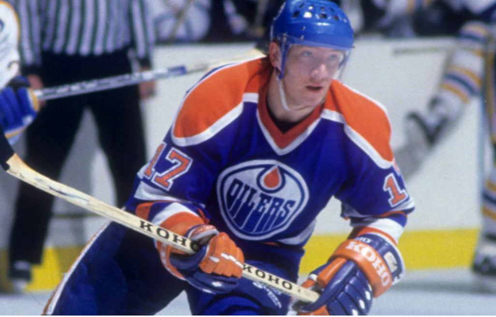
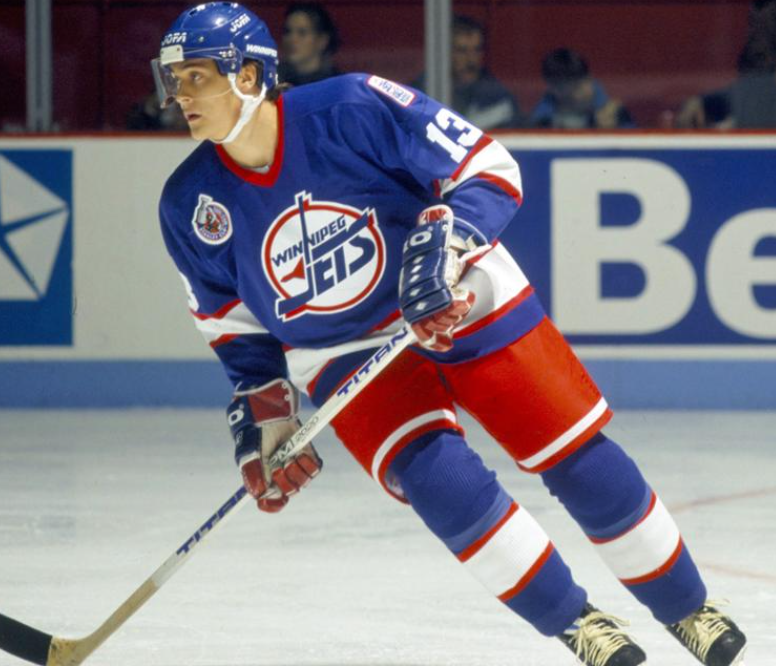
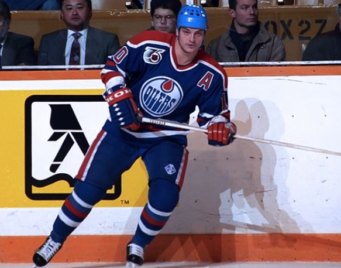

Jari Kurri

Jari Kurria pidetään Suomalaisten parhaana NHL-pelaajana. Jari Kurri voitti urallaan Stanley Cup palkinnon peräti viisi kertaa vuosien 1983 ja 1990 välillä. Kurri pelasi suurimman osan uraansa "Great one" Wayne Gretzkyn ketjukaverina. Jari Kurri on myös monesti ajateltu olevan maailman aliarvostetuin pelaaja juurikin siitä syystä.
Teemu Selänne

Teemu Selänne on Suomen tehokkain pelaaja tehopisteillä katsottuna NHL-kaukalossa. Selänteen eräs kirkkaimmista saavutuksista on debyytikaudella 1992-1993 Winnipeg Jets Organisaation riveissä. Selänne teki peräti 76 maalia kauden aikana ja on edelleen NHL-ennätys. Ennätystä on pidetty ikuisena maalimäärien vähenemisen johdosta.
Esa Tikkanen

Esa Tikkanen nousee Suomen Top 3 pelaajien joukkoon Stanley Cup voittojensa ansiosta. Tikkanen kuului Edmonton Oilersin kulta-aikaan ja voitti Edmontonissa 4 kannua. Poiketen Kurrista Esa Tikkanen siirtyi Edmontonista New York Rangesiin ja voitti myös siellä sinetöiden kokonaisuudessaan viidennen Stanley Cup voittonsa.